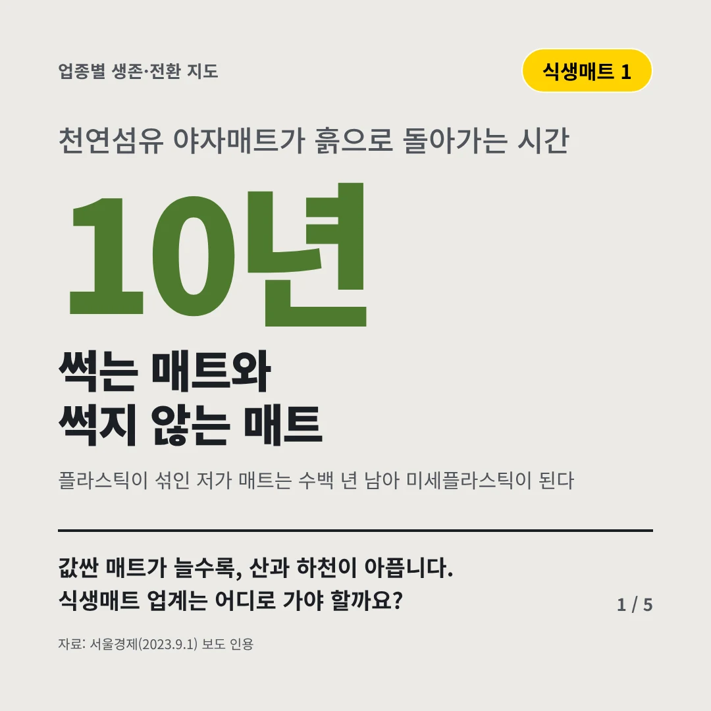
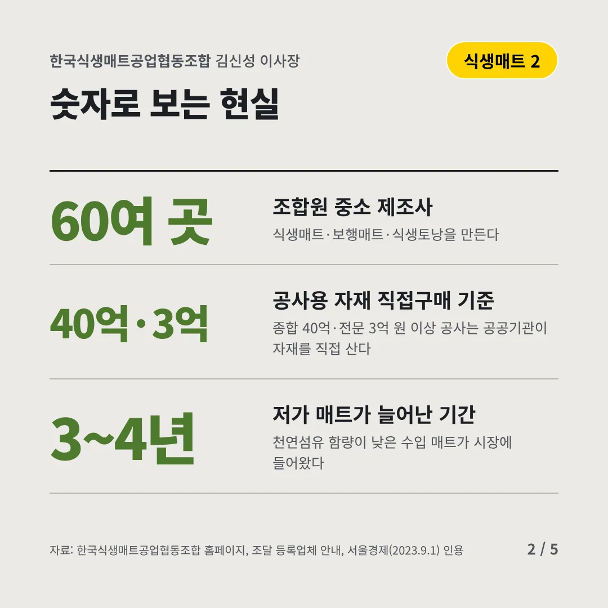
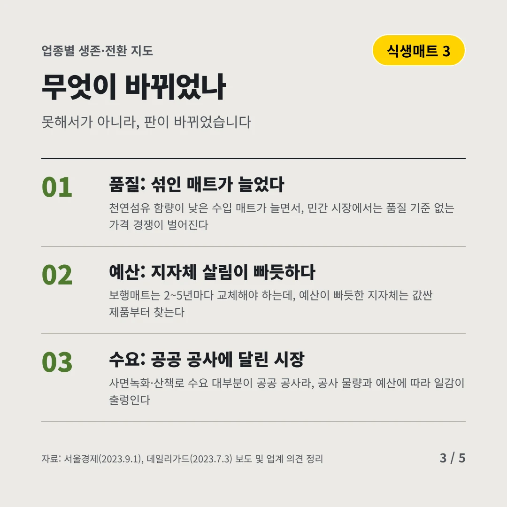
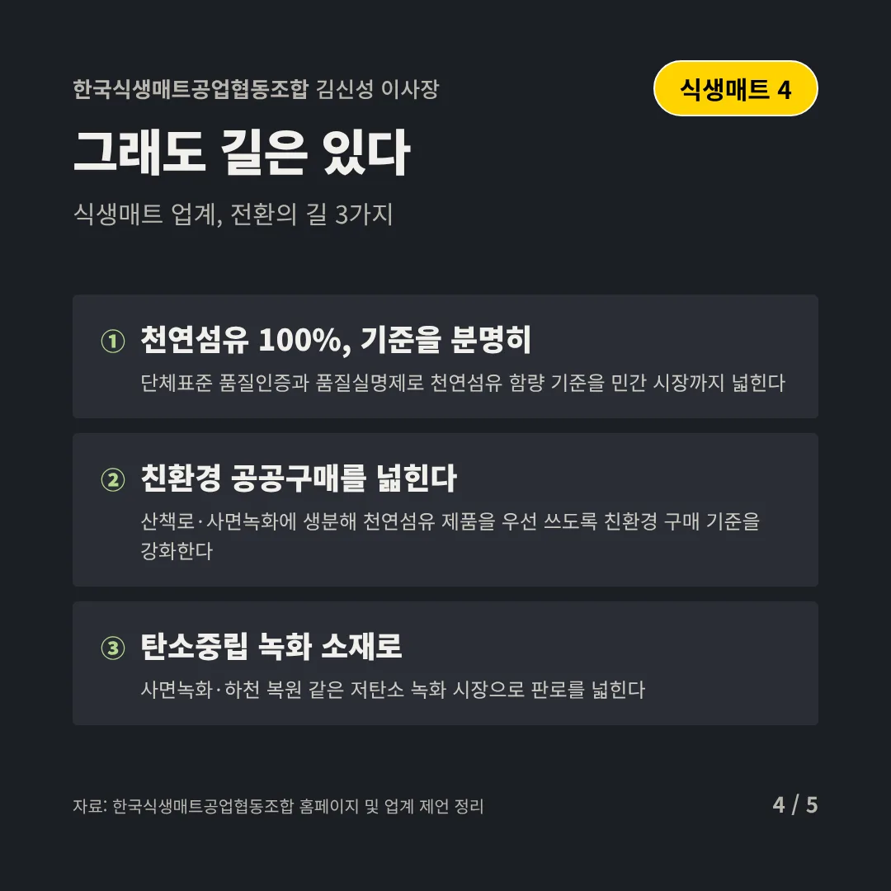
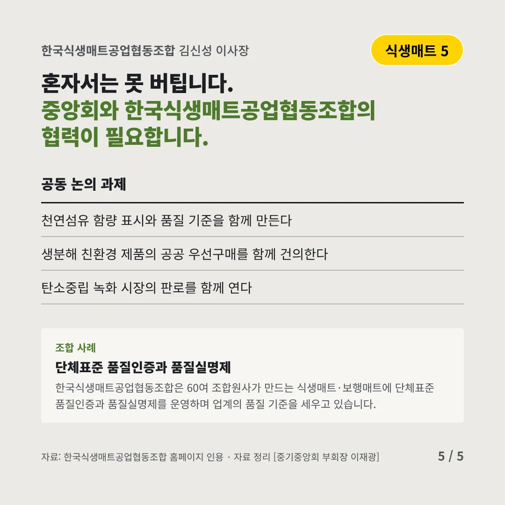
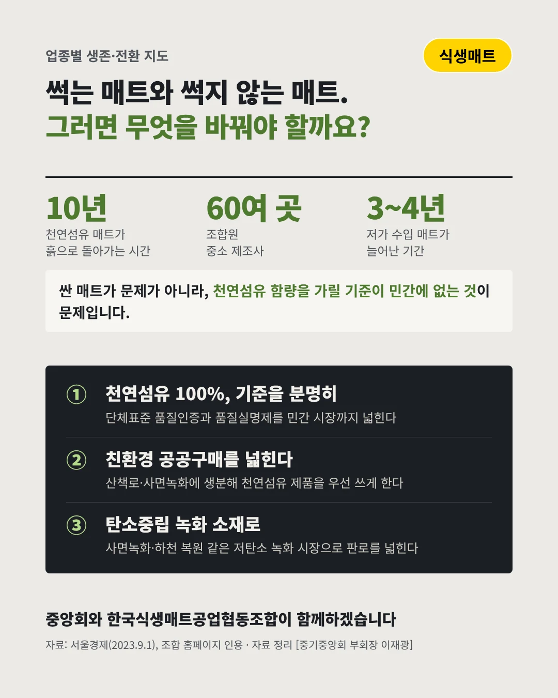

한국식생매트공업협동조합김신성 이사장
썩는 매트와 썩지 않는 매트
10년 천연섬유 야자매트가 흙으로 돌아가는 시간






값싼 매트가 늘수록, 산과 하천이 아픕니다. 식생매트 업계는 어디로 가야 할까요?
숫자로 보는 현실
- 60여 곳조합원 중소 제조사식생매트·보행매트·식생토낭을 만든다
- 40억·3억공사용 자재 직접구매 기준종합 40억·전문 3억 원 이상 공사는 공공기관이 자재를 직접 산다
- 3~4년저가 매트가 늘어난 기간천연섬유 함량이 낮은 수입 매트가 시장에 들어왔다
무엇이 바뀌었나
- 품질: 섞인 매트가 늘었다천연섬유 함량이 낮은 수입 매트가 늘면서, 민간 시장에서는 품질 기준 없는 가격 경쟁이 벌어진다
- 예산: 지자체 살림이 빠듯하다보행매트는 2~5년마다 교체해야 하는데, 예산이 빠듯한 지자체는 값싼 제품부터 찾는다
- 수요: 공공 공사에 달린 시장사면녹화·산책로 수요 대부분이 공공 공사라, 공사 물량과 예산에 따라 일감이 출렁인다
그래도 길은 있다
- 천연섬유 100%, 기준을 분명히단체표준 품질인증과 품질실명제로 천연섬유 함량 기준을 민간 시장까지 넓힌다
- 친환경 공공구매를 넓힌다산책로·사면녹화에 생분해 천연섬유 제품을 우선 쓰도록 친환경 구매 기준을 강화한다
- 탄소중립 녹화 소재로사면녹화·하천 복원 같은 저탄소 녹화 시장으로 판로를 넓힌다
한 장 요약

조합 사례
한국식생매트공업협동조합은 60여 조합원사가 만드는 식생매트·보행매트에 단체표준 품질인증과 품질실명제를 운영하며 업계의 품질 기준을 세우고 있습니다.
자료: 서울경제(2023.9.1), 한국식생매트공업협동조합 홈페이지, 조달 등록업체 안내, 데일리가드(2023.7.3)